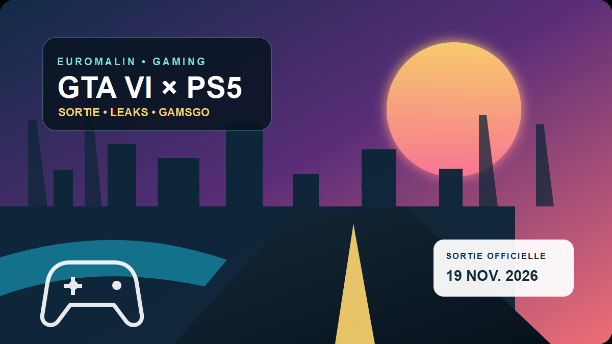

GTA 6 : ce qui est officiellement confirmé
Grand Theft Auto VI sortira le 19 novembre 2026 sur PlayStation 5 et Xbox Series X|S. Rockstar annonce aussi une présentation étendue le 27 août à 15 h, heure de New York. Aucune date PC n'est officielle au moment de cette mise à jour.
L'histoire suit Jason et Lucia à Vice City et dans l'État fictif de Leonida. La page PlayStation décrit actuellement GTA VI comme une expérience solo, jouable hors ligne et réservée à la PS5 côté Sony. Le jeu de base ne demande donc pas d'abonnement PlayStation Plus.
Comparer les offres PlayStation Plus sur GamsGo
Essential, Extra ou Premium, de 1 à 12 mois : vérifiez la durée, le vendeur, le mode d'accès et la garantie avant de choisir. Le code WPQTU peut être testé au panier.
Les leaks de GTA 6 : confirmé, probable ou simple rumeur ?
Le piratage de 2022 : authentifié par Rockstar
En septembre 2022, une intrusion réseau a permis le vol et la diffusion de séquences de développement. Rockstar a confirmé l'incident. Ces images provenaient d'une version très ancienne : elles prouvaient surtout que le jeu était en chantier, pas que chaque mécanique survivrait jusqu'à la sortie.
Les nouveaux clips d'août 2026 : toujours non confirmés
Depuis le 18 août, des clips et images supposés circulent à nouveau. Ils montreraient notamment une carte de Leonida, du basket, une jauge d'endurance, un système d'identification par la police et un niveau de recherche à six étoiles. Rockstar ne les a pas authentifiés. Même s'ils étaient réels, leur date de capture et leur fidélité à la version finale restent inconnues.
Pourquoi parler de GamsGo si GTA 6 est solo ?
Parce que GTA VI ne résume pas l'usage d'une PS5. PlayStation Plus reste utile pour le multijoueur d'autres jeux, les sauvegardes dans le cloud, les jeux mensuels et, selon la formule, les catalogues Extra ou Premium. Il ne faut toutefois pas acheter PS Plus en pensant qu'il est obligatoire pour l'histoire de GTA VI : ce n'est pas le cas.
Sur la page partenaire GamsGo contrôlée le 20 août 2026, nous avons trouvé 33 offres PlayStation avec plusieurs vendeurs, durées et méthodes de partage. Voici quelques exemples datés — ils peuvent évoluer à tout moment :
| Offre observée | Prix affiché | Livraison | À vérifier |
|---|---|---|---|
| Essential • 1 mois • accès complet | 10,37 € | instantanée | garantie 10 jours |
| Extra • 1 mois • accès complet | 15,47 € | 20 minutes | garantie 10 jours |
| Premium • 1 mois • accès complet | 16,85 € | 20 minutes | garantie 10 jours |
| Essential • 12 mois • compte privé | 60,76 € | 1 heure | garantie 90 jours |
GamsGo se distingue ici par le choix : accès complet ou compte partagé, Essential, Extra ou Premium, durées courtes ou annuelles. Le prix le plus bas n'est pas automatiquement le meilleur achat. Comparez toujours le total avec le PlayStation Store officiel.
La checklist avant d'acheter sur GamsGo
- Lire le type d'accès : « accès complet » et « compte partagé » ne donnent pas les mêmes droits.
- Vérifier la région : le pays du compte et celui de la console doivent être compatibles.
- Contrôler le vendeur : note, nombre d'avis, délai annoncé et période de garantie.
- Protéger ses données : ne réutilisez jamais votre mot de passe personnel et n'ajoutez pas votre carte bancaire au compte reçu.
- Comparer le prix final : testez
WPQTU, puis regardez le total réel plutôt qu'une remise théorique. - Conserver les preuves : fiche produit, messages et confirmation de commande.
Notre verdict
Pour suivre GTA 6, restez sur les annonces de Rockstar. Pour équiper votre PS5 autour du jeu — catalogue, cloud et autres expériences multijoueur — GamsGo est une marketplace intéressante à comparer grâce à ses nombreuses durées et formules. Elle demande toutefois plus d'attention qu'un achat direct : vendeur, contrôle du compte, région et garantie font toute la différence.
Accéder à la sélection PlayStation de GamsGo
Prix vérifiés le 20 août 2026. Testez le code WPQTU et relisez les conditions de l'offre avant paiement.
Questions fréquentes
Quelle est la date de sortie officielle de GTA 6 ?
Rockstar Games annonce Grand Theft Auto VI pour le 19 novembre 2026 sur PlayStation 5 et Xbox Series X|S.
GTA 6 nécessite-t-il PlayStation Plus ?
Non pour l'histoire annoncée : la fiche PlayStation présente GTA VI comme une expérience solo. Aucun mode multijoueur GTA VI n'est confirmé à ce jour.
Les leaks d'août 2026 sont-ils fiables ?
Ils ne sont pas authentifiés par Rockstar. Même si les images étaient réelles, elles pourraient provenir d'une version de test dépassée.
GamsGo vend-il GTA 6 ?
La page liée ici concerne des comptes et abonnements PlayStation Plus, pas une copie de GTA VI. Le jeu se précommande séparément auprès des revendeurs officiels.